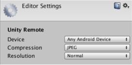

Unity Remote
Unity Remote is a downloadable app designed to help with Android, iOS and tvOS development. The app connects with Unity while you are running your project in Play Mode from the Unity Editor. The visual output from the Editor is sent to the device's screen, and the live inputs are sent back to the running project in Unity. This allows you to get a good impression of how your game really looks and handles on the target device, without the hassle of a full build for each test.
Note: For Unity Remote to work, you need to have the Android SDK on your development machine.
Unity Remote replaces the separate iOS and Android Remote apps used with earlier versions. Those older Remote apps are no longer supported.
Older versions of Unity Remote are still available for use in Legacy projects; see Legacy Unity Remote documentation for more information on these versions.
Device and Feature Support
Unity Remote currently supports Android devices (on Windows and OS X via a USB connection) and iOS devices (iPhone, iPad, iPod touch and Apple TV, through USB on OS X and Windows with iTunes).
The Game View of the running Unity project is duplicated on the device screen, but at a reduced framerate. The following input data from the device is also streamed back to the Editor:
- Touch and stylus input
- Accelerometer
- Gyroscope
- Device camera streams
- Compass
- GPS
- Joystick names and input
Note that the Remote app simply shows the visual output on the device and takes input from it. The game's actual processing is still done by the Editor on the desktop machine - so its performance is not a perfect reflection of the built app.
Obtaining and Using Unity Remote
You can download Unity Remote for free in the form of a Unity project that you build yourself, or as a pre-built app from the device's app store:
- Android app from Google Play
- iOS and tvOS apps from the App Store
Once you've downloaded the app, install and run it on your device and connect the device to your computer using a USB cable.
To enable Unity to work with your device, open the Editor settings in Unity (menu: Edit > Project Settings, then select the Editor category) and select the device to use from the Unity Remote section:

Note: To specify the location of your Android SDK, go to Edit > Preferences (Windows) or Unity > Preferences (Mac).
Click the Play button in the Editor to see your game appear on the device and in the Unity game window as Unity connects to the Remote app. While the game plays, input from the device (accelerometer, etc.) is sent to your scripts as if they were running on the device itself.
Troubleshooting
I have more than one device plugged in, but only one of them works with Unity
Unity Remote doesn't support multiple connected Android devices, and to resolve this, it automatically picks the first device it finds. However, it is fine to have multiple iOS/tvOS devices and one Android device connected at the same time, since you can select which one to use from the Editor settings (menu: Edit > Project Settings, then select the Editor category).
I'm getting really poor graphics quality when running my game in Unity Remote
When you use Unity Remote the game actually runs in the Editor, while its visual content is streamed to the target device. Since the bandwidth between the Editor and the device is limited, the stream must be compressed heavily for transmission. This compression inevitably reduces the image quality.
In the Unity Remote section of the Editor window (menu: Edit > Project Settings, then select the Editor category) you can switch the compression method between JPEG and PNG. PNG compression is "lossless" (so the image quality doesn't degrade) but uses more bandwidth than JPEG. A downsized image has lower bandwidth requirements than one at full resolution. By changing these settings, you can trade image accuracy off against framerate as necessary. When using a lower resolution, be aware that Unity Remote downsizes images for better performance.
Bear in mind that Unity Remote is only really intended to give a quick approximate check of how your game will look and feel when running on the device. Make sure that you occasionally do a full build and test the "real" app.